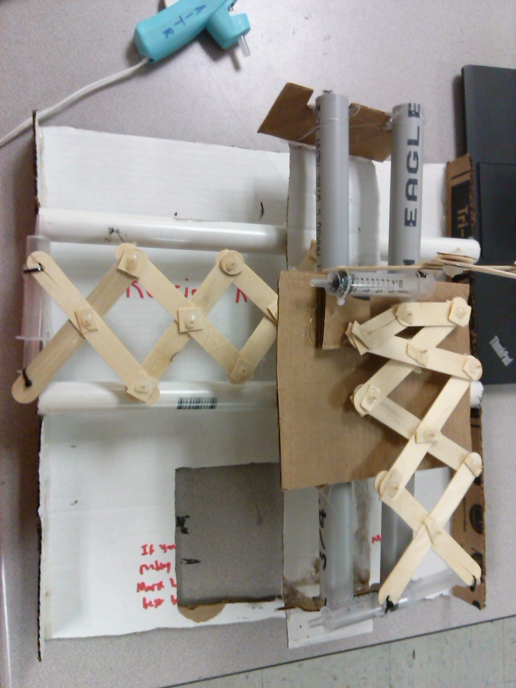

Hydraulics are used when something is going to be powered or operated some sort of fluid. In this claw machine I had used tubes and syringes that would connect to eachother to control the popsicle sticks contracting and expanding.

When the syringes at the front get pushed it will cause the water inside the syringe to go through the tube and control whichever one it happenes to be connected to.